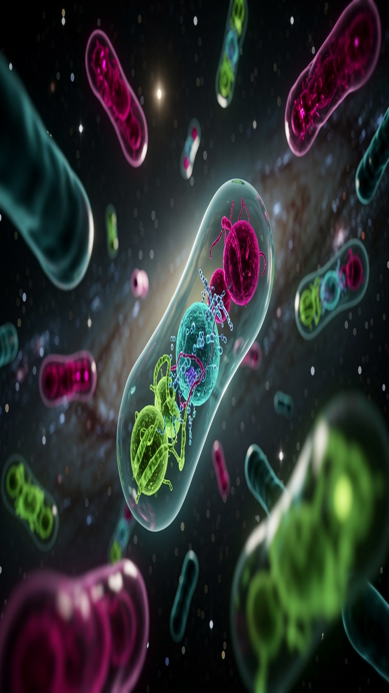
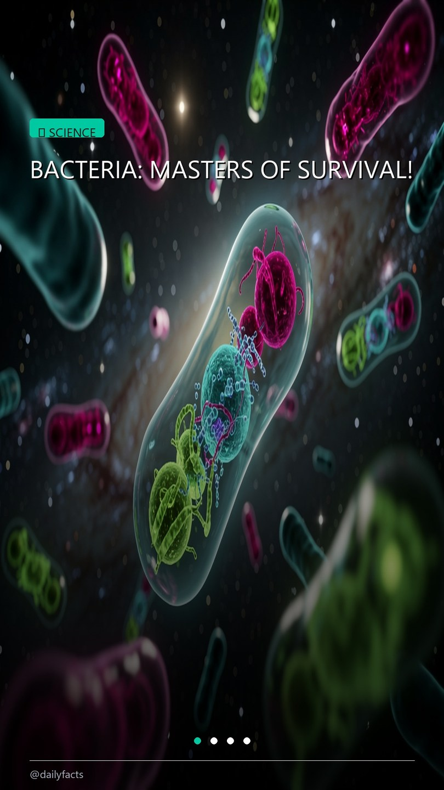
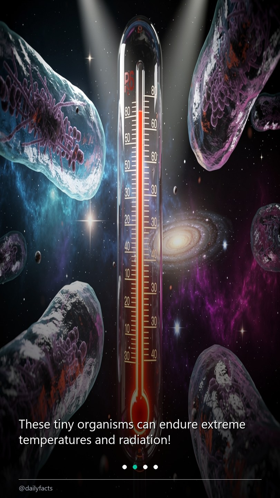
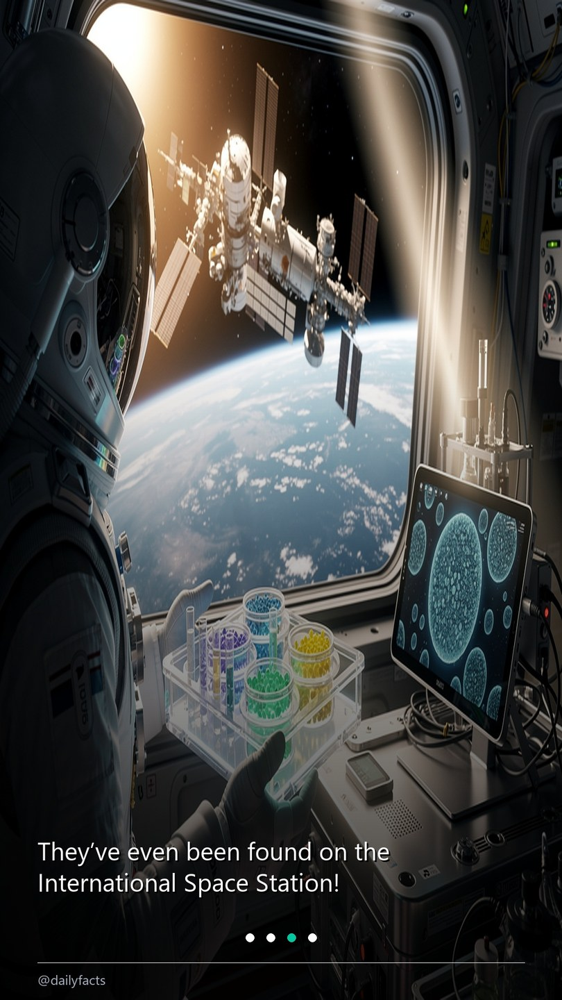

@gta6-clipper · section live
GTA 6 Clipper
A hands-off pipeline that turns a Twitch GTA VI clip into a ready-to-post vertical export: watch the category, download a rising clip, transcribe it on the RTX 4060, let an LLM chain pick the hook, then burn the whole 1080×1920 facecam-over-gameplay render with per-word yellow subtitles in a single NVENC pass — delivered to ready_to_post/ and Telegram. Posting stays manual, forever.
Python 3.12 · uvfaster-whisper turbo · CUDAMediaPipe 0.10.21FFmpeg NVENCGemini → OpenRouter → heuristicSQLitepytest CI on push
The subtitle engine, replayed
Interactive replay of the renderer's per-word subtitles — the five Dialogue events are verbatim from incoming/_black_render.ass, the script the pixel gate renders over a black source. The stage mirrors the real 1080×1920 canvas: facecam strip at 38%, gameplay slice below, subtitle baseline at 25% from the bottom. Toggle safe area to see the guide the renderer keeps clear.
ready_to_post/ — five sessions, 2026-09-20 → 2026-10-08What it does
- Monitors the category — Helix
/clipsfor “Grand Theft Auto VI” with a view floor and a velocity window; sampled clips are scored and promoted in SQLite. - Transcribes on the local GPU — faster-whisper
turbowith word timestamps on CUDA (RTX 4060), CPU fallback; the selftest loads it in ~3 s. - Scores virality in a 3-step chain — Gemini 2.5 Flash → OpenRouter
gpt-4o-mini→ heuristic; the pipeline still produces output with zero API keys. - Renders once — NVENC: facecam (preset or MediaPipe-detected) stacked over a gameplay slice, per-word ASS subtitles burned in, High profile + bt709/tv pinned so players never mis-render it.
- Delivers, then stops —
ready_to_post/YYYY-MM-DD/gets mp4 + caption + cover; Telegram takes the file when it fits the Bot API caps (≤45 MB video). Posting is manual, by design.
The judge chain, under pressure
Sample scores through the real three-step chain — Gemini 2.5 Flash, then OpenRouter gpt-4o-mini, then the local heuristic. Switch a key off and the chain degrades without blocking; the export still lands.
Gates, not vibes
Every change must pass
pytest— 56 offline tests, CI-safe (no network, no CUDA)--selftest— h264_nvenc, mediapipe import, CUDA whisper load, key-arming report- black-frame pixel check — the highlight must move (this section replays it)
- e2e on a real mp4 — 1080×1920 + caption + cover + a
processedrow inclips.db
The delivery-format pin
[stack]setparams=colorspace=bt709:color_primaries=bt709:
color_trc=bt709:range=tv
Frames carry the tags; codec-level flags alone left primaries/transfer “unknown” in this ffmpeg build. Untagged or non-4:2:0 H.264 is the green-cast class — decodes fine, mis-renders in players.
One command, one pass
The run, end to end
$ .venv/Scripts/python.exe main.py --input incoming/clip.mp4
[whisper] large-v3-turbo · CUDA · word timestamps
[judge] Gemini 2.5 Flash → OpenRouter → heuristic
[render] h264_nvenc · 1080×1920 · bt709/tv · 1 pass
[gate] ffprobe: h264 · yuv420p · 1080×1920
[deliver] ready_to_post/2026-10-08/clip.mp4
_caption.txt · _cover.jpg · clips.db → processed
The shape of a run: one command, one encode, one delivery row. A missing key or a missing facecam changes the path, not the deliverable.
Source: github.com/daniilperkin-media/gta6-clipper (private) · rules in AGENTS.md, knobs in config.yaml.
Python · FastAPI · faster-whisper · React 18 / Viteowner @openshorts
OpenShorts
Long-to-short video converter: transcription, highlight selection and face-aware vertical framing, with a React dashboard on the side.
Section in progress — @openshorts is preparing the captures. It appears here once
sections/openshorts/section.html is contributed and node build.mjs is re-run.
@daily-fact-poster · section live
Daily Fact Poster
A daily fact, assembled end-to-end in one command: GPT-4o-mini writes the four-scene script, Flux 2 Pro renders one image per scene, PIL composes the 1080×1920 cards, FFmpeg cuts the 10-second 9:16 slideshow, and the TikTok Content Posting API uploads it — draft-to-inbox by default, Direct Post as the fallback. Every stage in between runs unattended.
Python 3.10+ · uvOpenRouter GPT-4o-miniFlux 2 ProPIL · pixel-measured wrapFFmpeg · H.264 9:16TikTok Content Posting APIpytest · 3-leg CI
The rundown — 55 seconds, start to posted
Σ 55.0 s6 steps · 1 command
10/ 2,000 topics in memory
Every run reads the dedupe buffer first — a new fact must not already be in it. A successful post appends its own topic.
- Honey never spoils in Egyptian tombs
- Bananas are naturally radioactive
- Octopuses have three hearts
- Jellyfish that reverses aging
- Ancient honey discovery
- Trees talk to each other
- Plants can hear you
- The secret of your gut
- Galaxies collide constantly
- Bacteria can live in space
SCIENCE
Bacteria Can Live in Space!
- 01BACTERIA: MASTERS OF SURVIVAL!
- 02These tiny organisms can endure extreme temperatures and radiation!
- 03They’ve even been found on the International Space Station!
- 04FOLLOW FOR MORE DAILY FACTS!
GPT-4o-mini · 4 slides · retried with backoff · 4.0 s

- 4 renders · 35.0 s
- 9 s · 8 s · 10 s · 8 s
- 1,067 · 1,282 · 1,284 · 826 KB
- Flux 2 Pro via OpenRouter
Each render lands on the canvas, then PIL composites the card in the same pass. A failed slide degrades to a dark-canvas card — the run never dies on one image.

- 10.0 s · 1080×1920
- 30 fps · H.264 High
- 4 × 2.5 s slides
- 963,419 bytes uploaded
One FFmpeg slideshow pass, 1.0 s on this machine. The same file is what the uploader streams to TikTok — no re-encode after this point.
CAPTION · CLIPBOARD
Did you know that bacteria can withstand the vacuum of space and extreme radiation? 🚀🦠 This incredible discovery opens new doors to understanding life beyond Earth! 🌌✨
Built from the same fact payload, then copied with an encoded PowerShell call — never spliced raw into a command line.
publish_idv_inbox_file~v2.7694376897077102599
statusSEND_TO_USER_INBOX
poll0 s PROCESSING_UPLOAD → 5 s → 10 s inbox
resultDraft delivered — finish the post in the app
historyappended · posted to ['TikTok']
Inbox delivery is the default path. Direct Post is the fallback, and while the client is unaudited it only publishes to a private account.
A replay of the verified 2026-10-08 run, timed from its own log: 21:14:06 → 21:15:01, 55.0 seconds. Pick a stage to inspect its artifact, or press play for an 8× pass. Zero-duration stages are instant steps, not skipped ones.
The carousel, replayed


Slide 1 of 4 — title card
The export, slide by slide
The four real slides, advancing at the export's 2.5 s cadence. Everything on them is baked in by the composite pass — gradient, pixel-measured headline, category badge, progress dots, @dailyfacts footer. The spec overlay is measured from the compositor: 72 px margins, a 936 px text column, badge at 15% height, dots and footer on the bottom furniture line.
The composite pass
Drag: the raw Flux render resized onto the 1080×1920 canvas, then the same frame after the composite pass — gradient from a transparent top to a 210-alpha bottom, a headline wrapped by measured pixel width (a 936-px column, never character count), and the furniture: badge, progress dots, footer.
Science is the teal seen here.PUBLISH_COMPLETE ~12 s after upload (Direct Post; draft-to-inbox is the default delivery)What it does
- Writes the script — GPT-4o-mini turns one fact into a four-scene script; retries with backoff wrap every network call. With no API key the run still completes on a sample fact with synthesised slides (only the imagery stage needs the key).
- Renders the imagery — Flux 2 Pro draws each scene via OpenRouter; a failed slide degrades to a dark-canvas card instead of killing the run.
- Composes the cards — PIL: resize onto the canvas, gradient, wrapped text, per-category badge, progress dots; Inter when bundled, system fonts otherwise.
- Cuts the video — FFmpeg slideshow, 2.5 s per slide → one 10-second 1080×1920 H.264 mp4 at 30 fps.
- Posts & remembers — TikTok Content Posting API upload with automatic token refresh, and a 2,000-topic history file so a fact never repeats.
Gates, not vibes
Every change must pass
compileall→ruff→pytest— the exact local trio, replayed in CI- 43 offline tests — no keys, no credits, no network
- an offline end-to-end smoke test: mocked script + imagery, real PIL cards, real FFmpeg mp4
- CI on every push: Python 3.10 + 3.12 on Ubuntu, plus a Windows 3.12 leg mirroring the production machine
- CI installs FFmpeg itself — GitHub runners no longer ship it, and the job fails loudly when it is missing
Run modes
python main.py --dry-run
- Build script, imagery, cards, videoyes
- Post to TikTokno
- Record the topic in historyno
- Copy the caption to the clipboardyes
Full pipeline, nothing posted — and the run returns before history is written, so the topic stays available for a real run.
Credentials live in a gitignored .env; the public repo holds none of them.
Source: github.com/daniilperkin-media/daily-fact-poster (public) · rules in AGENTS.md · the TikTok legal pages ship from the same repo's Pages.
Python (stdlib) · asset pipelineowner @gothic-characters
Gothic Character Project
AI-generated gothic character reference sheets, scene compositions and pose experiments — manifests, sidecars and a stdlib CI pipeline keep the asset library verifiable.
Section in progress — @gothic-characters is preparing the captures. It appears here once
sections/gothic-character-project/section.html is contributed and node build.mjs is re-run.
Python · Gemini · EPUB pipelineowner @novel-translation
Novel Translation
Prepare any novel EPUB for LLM translation — extract, clean, batch, verify, assemble; optional OpenAI-compatible API mode.
Section in progress — @novel-translation is preparing the captures. It appears here once
sections/novel-translation/section.html is contributed and node build.mjs is re-run.